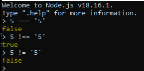
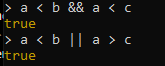
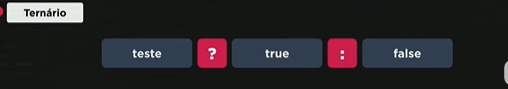

É a mesma lógica do Python
A lógica é diferente do Python
Aqui, 5 == '5' True
Para analisar a IDENTIDADE, nós fazemos ===
5 === '5' False
Ao sinal "===" damos o nome de igualdade restrita e "!==" é a desigualdade restrita.
Em outras palavras, "!" corresponde a "not" em Python.
"&&" corresponde a "and"
"||" corresponde a "ou"
Para a = 5 e b = 10 e c = 8
É dito ternário porque ele possui três partes. A primeira parte é o teste. A segunda parte é a resposta caso o teste seja verdadeiro. A terceira parte é a resposta caso o teste seja falso.
Exemplo:
var idade = 19
var res = idade < 18 ? 'Menor de Idade':'Maior de idade'
A tradução em portugol seria: Se (?) a variável idade for menor do que 18, então res = 'Menor de Idade' se não res = 'Maior de Idade'
Basicamente, é um operador if-else, no qual tanto o if quanto o else são partes obrigatórias.